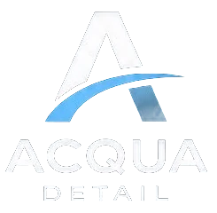
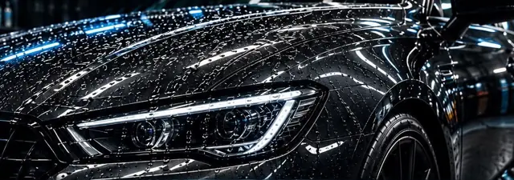

SEO
Salir en Google
Que aparezcas arriba cuando alguien de Gualeguay y la zona busca detailing, pulido o cerámico, en la búsqueda y en el mapa.

Hola, Acqua Detail
Te armamos una muestra con tus servicios y el estilo de tus flyers. Hicimos dos versiones, con precios y sin precios, para que elijas la que va mejor con tu forma de trabajar.
La muestra
Las dos son iguales en diseño. Solo cambia cómo se muestran los precios. Abrilas desde el celular, que es donde las van a ver tus clientes.
Versión 1
Muestra un precio estimativo promedio de cada servicio: cada auto es distinto y el precio final se confirma al verlo.
Ver versión con precios
Versión 2
Cada servicio dice «Según tu auto» y el botón abre WhatsApp pidiendo presupuesto, con el servicio ya escrito.
Ver versión sin preciosQué te vamos a hacer
Hoy tus clientes te encuentran por Instagram y un Linktree. Con tu propia página te encuentran también en Google y te escriben directo.
Con tu nombre, tus servicios y el estilo de tu marca, en tu propio dominio.
Cada botón abre WhatsApp con el servicio ya escrito. El cliente no tiene que explicar nada.
Preparada para que te encuentren cuando buscan «tratamiento cerámico» o «detailing» en Gualeguay.
Un comparador que se desliza con el dedo para mostrar tus trabajos.
Con una barra fija de WhatsApp, Llamar y Cómo llegar.
Carga al instante y está protegida, sin publicidades ni cosas raras.
El potencial en Gualeguay
En una ciudad como Gualeguay, cuando alguien busca «tratamiento cerámico» o «detailing» en Google, hoy casi no aparece nadie con una página propia. El primero que la tenga se queda con esas búsquedas.
Las reseñas son lo que más pesa para salir arriba en el mapa cuando alguien busca cerca. Y casi ningún taller de la zona las pide.
Con 30 o 40 reseñas de 5 estrellas, sos el taller que todos ven primero.
SEO y AEO
Cada vez más gente pregunta directo a Google, a ChatGPT o a Gemini: «¿dónde hacen tratamiento cerámico en Gualeguay?». Esas herramientas recomiendan a los negocios que responden claro esas preguntas en su página.
SEO
Que aparezcas arriba cuando alguien de Gualeguay y la zona busca detailing, pulido o cerámico, en la búsqueda y en el mapa.
AEO
Que ChatGPT, Gemini y las respuestas de Google con IA te nombren a vos cuando alguien les pregunta a quién llevar el auto.
Estas son las preguntas que más se buscan sobre detailing. Contestalas con tus palabras: por WhatsApp, con un audio, como se las explicarías a un cliente. Nosotros las ponemos en tu página con tu respuesta, y así Google y la IA te encuentran.
No hace falta que las respondas todas de una vez. Cada mes sumamos las que vayan llegando.
Demo aparte · Turnos online
Tus clientes reservan solos desde la página, a cualquier hora, y vos ves todo el trabajo de la semana en una agenda. Sin anotar en papel ni contestar mensajes para coordinar horarios.
Es un servicio aparte: no viene incluido en la web profesional. Te dejamos esta demo para que la pruebes y veas si te sirve.
Lo que ve tu cliente
Elige el servicio, si es auto, SUV o camioneta, el día y la hora libre, y deja su WhatsApp. Puede agregar el turno a su calendario. Los tratamientos de varios días reservan el auto completo en el box.
Probar la reservaLo que ves vos
La semana con cada turno por box. Marcás «Llegó» y «Listo», y con un toque le mandás al cliente el recordatorio o el aviso de que su auto está listo.
Ver la agendaEs una demo: probala tranquilo, lo que reserves se guarda solo en tu teléfono. En la versión real te llega el aviso de cada turno y el cliente recibe un recordatorio el día antes.
Opciones
Opción 1
La página como la ves en la muestra, publicada con tu dominio y lista para que te escriban por WhatsApp. No incluye los turnos online.
Opción 2
Todo lo de la opción 1, más el sistema de turnos online, que se suma aparte: el cliente elige día y horario, le llega un recordatorio y vos ves todo en tu agenda.
Ver la demo de turnosTe recomendamos
Es el plan para crecer en Google y en la IA mes a mes. Los turnos online se cotizan aparte.
El armado inicial de la página te lo pasamos por WhatsApp.
Un solo tratamiento cerámico ya paga la página.
Cómo seguimos
La versión que más te gusta y la opción, web sola o web con reservas.
Días y horarios, fotos de trabajos reales que hayas hecho y cualquier cambio que quieras.
La dejamos andando con tu dominio y te mostramos cómo llegan las consultas.
¿Te gusta?
Respondé el mismo mensaje con el que te mandamos este link y te contamos todo.
Volver a ver las versiones